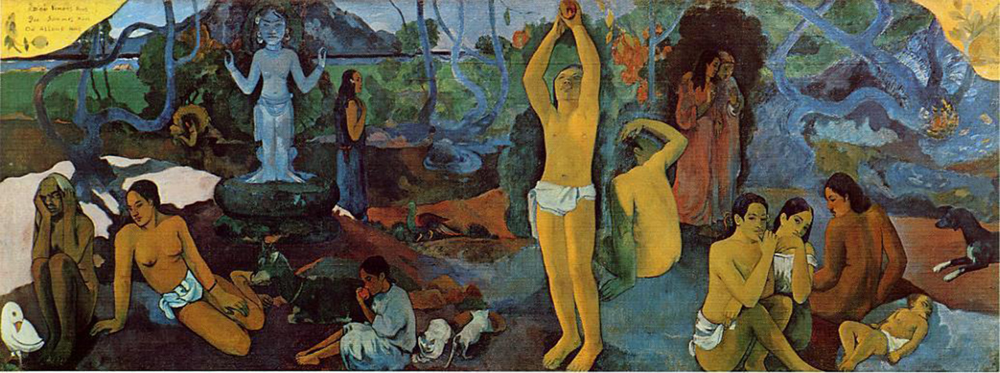
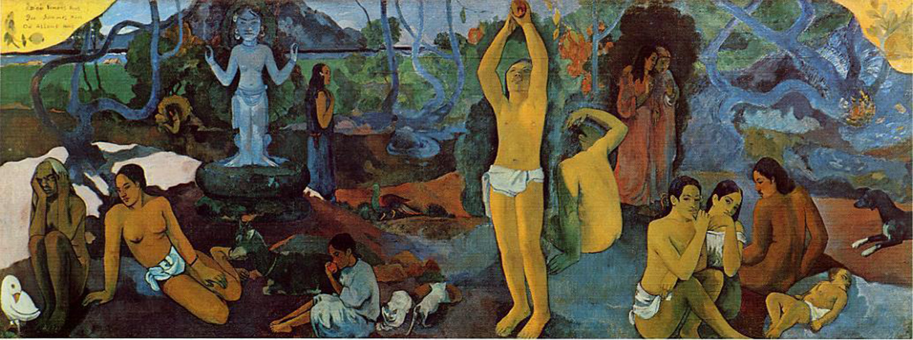

More Metail
Body
Foremost among the differences are the use of ink and silk paper as opposed to oil and canvas, the use of a silk scroll rather than a wood.
Learn More
Self
Paul Theroux, Riding the Iron Rooster, 1988 When looking at a Chinese painting, most visitors will remark upon the enormous differences from Western painting tradition.
Learn More
Mother
They were the oddest hills in the world, and the most Chinese, because these are the hills that are depicted in every Chinese the scroll.
Learn More